サロン系
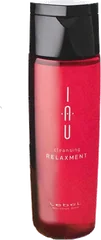
ルベル
イオ リラックスメント
200mL
¥1,320税込・出典掲載価格
クチコミの要約
- 乾燥する時期だから選んだけどしっとりやわらかい仕上がりで朝のブローが楽になった気がするの
- ノンシリコンなのに泡立ちがすごくよくてドライヤー後もしっとり落ち着いてくれるの
気になる声泡立ちも指通りも気持ちいいけどほんのりした香りはブローで残らなくてちょっと残念かな
販売価格・容量・送料はリンク先でご確認ください
THE COSME EDIT / 2026.09.16
YouTubeの動画で紹介した12品です。ドン・キホーテで買えるシャンプーとして紹介されている人気の品から、秋のパサつきや広がりが気になる人に向けて、楽天のクチコミの声をまとめました。
12 ITEMS 動画で紹介した商品
価格は出典掲載時のものです。楽天の現在価格とは異なる場合があります。

ルベル
200mL
¥1,320税込・出典掲載価格
クチコミの要約
気になる声泡立ちも指通りも気持ちいいけどほんのりした香りはブローで残らなくてちょっと残念かな
販売価格・容量・送料はリンク先でご確認ください
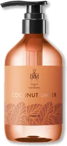
ISM
490mL
¥1,980税込・出典掲載価格
クチコミの要約
気になる声3種類の中で特に香ったのがココナッツだったんだけど私にはちょっと強すぎる香りだったかな
販売価格・容量・送料はリンク先でご確認ください
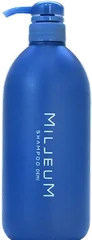
デミ
800mL
¥1,430税込・出典掲載価格
クチコミの要約
気になる声すごくさっぱりした洗い上がりだからしっとりを求める人には合わないかもって思ったかな
販売価格・容量・送料はリンク先でご確認ください
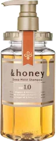
&honey
440mL
¥1,595税込・出典掲載価格
クチコミの要約
気になる声香りは甘めだけどあまり残らなくてトリートメントするとつるんとはするけどパサつきは残ったかな
販売価格・容量・送料はリンク先でご確認ください
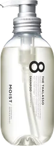
エイトザタラソ
475mL
¥1,540税込・出典掲載価格
クチコミの要約
気になる声洗い上がりはさっぱりだけどシャンプーだけだとするんとはいかなくてトリートメントは要るよ
販売価格・容量・送料はリンク先でご確認ください
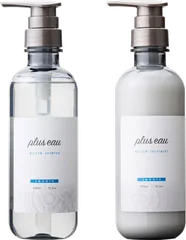
プリュスオー
各450mL
¥3,300税込・出典掲載価格
クチコミの要約
気になる声シャンプーをすすいだあとは思ったよりきしむ感じがしてコンディショナーで落ち着くよ
販売価格・容量・送料はリンク先でご確認ください
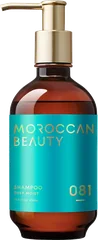
モロッカンビューティ
430mL
¥1,650税込・出典掲載価格
クチコミの要約
気になる声オイル入りでも重くないけど洗浄力はちょっと物足りなくてすっきり感はあまりないかな
販売価格・容量・送料はリンク先でご確認ください
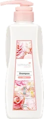
サムライウーマン
350mL（詰め替え）
¥636税込・出典掲載価格
クチコミの要約
気になる声しっかり洗えるタイプだからシャンプーだけだと少しだけきしむ感じが出ることもあるかな
販売価格・容量・送料はリンク先でご確認ください
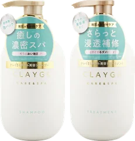
クレージュ
各500mL
¥3,080税込・出典掲載価格
クチコミの要約
気になる声頭皮がスーッとする感じだから寒くなってくる時期はちょっと冷たく感じちゃうかもしれない
販売価格・容量・送料はリンク先でご確認ください
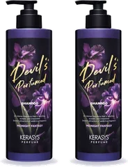
ケラシス
1000mL×2本
¥3,360税込・出典掲載価格
クチコミの要約
気になる声シャンプーのあとは少しだけキシッとする感じがあるからコンディショナーは欠かせないかな
販売価格・容量・送料はリンク先でご確認ください
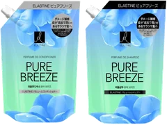
エラスティン
350mL×2個
¥1,090税込・出典掲載価格
クチコミの要約
気になる声いい香りなんだけど私の場合思ってたより香りが残らなくてもう少し長く続いてほしいかな
販売価格・容量・送料はリンク先でご確認ください
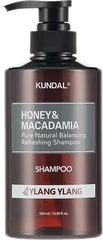
クンダル
各500mL
¥3,300税込・出典掲載価格
クチコミの要約
気になる声人気のアンバーバニラにしたら思ってたより甘い香りが強くて別の香りにすればよかったかな
販売価格・容量・送料はリンク先でご確認ください
SOURCE & NOTES
集計期間：2026年9月15日に確認したクチコミです。件数はその商品ページの件数で、ショップによって異なります。
価格は2026年9月15日に楽天の商品ページで確認した税込価格です。ドン・キホーテの店頭の価格や取り扱いは店舗によって異なります。髪質によって感じ方には個人差があります。